Tu Rutina Athletic Gym - Matrix Equipment
Información del Ejercicio
Consejos de Técnica
Día 1: Pecho & Tríceps (Énfasis en Fuerza y Volumen)
Calentamiento (5-10 minutos):
- Caminadora Matrix - 5 minutos de caminata a paso ligero o trote suave.
- Rotaciones amplias de brazos hacia adelante y hacia atrás.
- Estiramientos dinámicos ligeros para pecho y hombros.
Rutina Principal:
1. Press de Pecho en Máquina Matrix - 4 series de 8-12 repeticiones
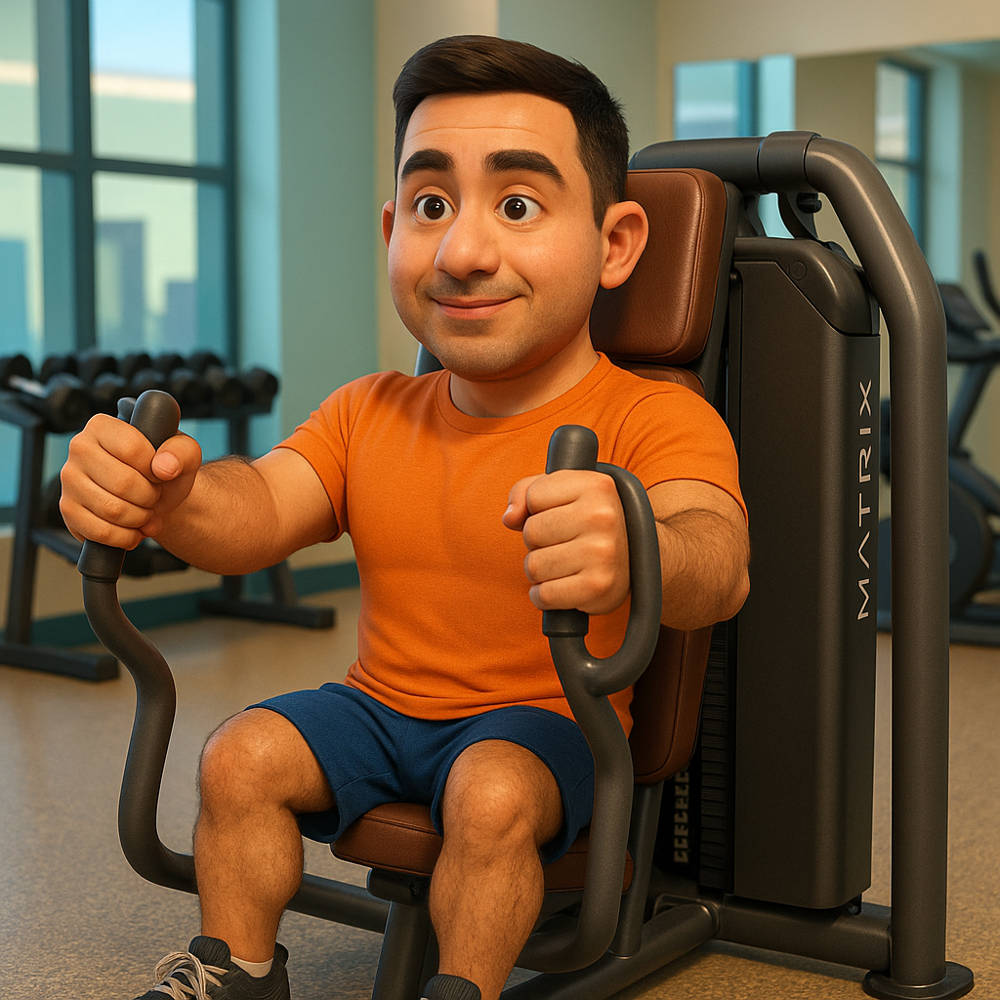Ajusta el asiento para que las manijas estén a la altura media de tu pecho. Empuja con fuerza, sintiendo la contracción en el pecho, y controla el retorno lento del peso.
2. Press Inclinado en Máquina Matrix - 3 series de 10-15 repeticiones

Configura el respaldo para un ángulo de inclinación moderado. Concéntrate en activar la parte superior del pecho al empujar.
3. Fondos Asistidos Matrix - 3 series al fallo (o 8-12 repeticiones)

Usa la asistencia necesaria para completar las repeticiones con buena forma. Baja hasta que tus hombros estén por debajo de tus codos y empuja con fuerza para subir.
4. Extensión de Tríceps en Máquina Matrix - 3 series de 12-15 repeticiones

Mantén los codos fijos y pegados al cuerpo. Extiende completamente el brazo contrayendo el tríceps, y controla el movimiento de vuelta.
5. Apertura de Pecho en Máquina (Pec Deck) Matrix - 3 series de 15-20 repeticiones
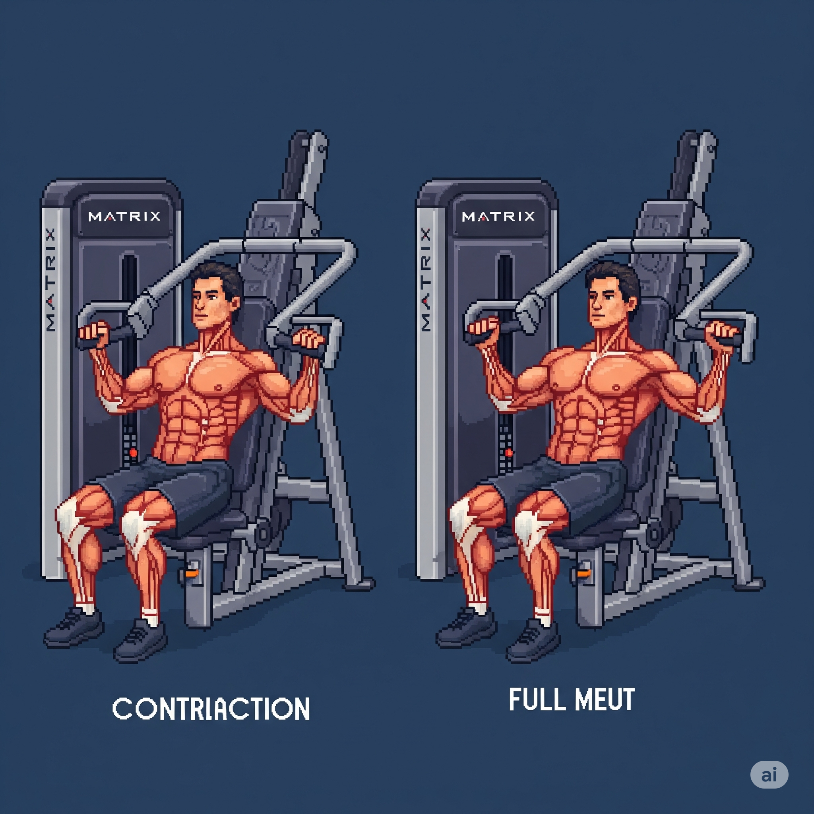Mantén los codos ligeramente flexionados. Concéntrate en el estiramiento completo al abrir y en la máxima contracción del pecho al cerrar las palancas.
Enfriamiento (5-10 minutos):
Estiramientos estáticos para pecho, hombros y tríceps. Sostén cada estiramiento por 20-30 segundos.
Día 2: Piernas & Glúteos (Énfasis en Fuerza y Volumen)
Calentamiento (5-10 minutos):
- Bicicleta Estática Matrix - 5 minutos a resistencia moderada.
- Movilidad de cadera (círculos con las piernas, balanceos).
- Activación de glúteos (ej. puentes de glúteo sin peso en el suelo).
Rutina Principal:
1. Prensa de Piernas Matrix - 4 series de 10-15 repeticiones

Coloca los pies al ancho de los hombros, baja la plataforma hasta que tus rodillas formen un ángulo de 90 grados. Empuja con los talones, extendiendo las piernas sin bloquear las rodillas.
2. Extensión de Cuádriceps Matrix - 3 series de 12-15 repeticiones

Extiende las piernas completamente y haz una pausa de 1 segundo en la parte superior, contrayendo fuertemente los cuádriceps. Baja el peso de forma controlada.
3. Curl Femoral Matrix - 3 series de 12-15 repeticiones

Flexiona las piernas con fuerza, sintiendo la contracción en los isquiotibiales. Controla el movimiento tanto al subir como al bajar el peso.
4. Abducción de Cadera Matrix - 3 series de 15-20 repeticiones
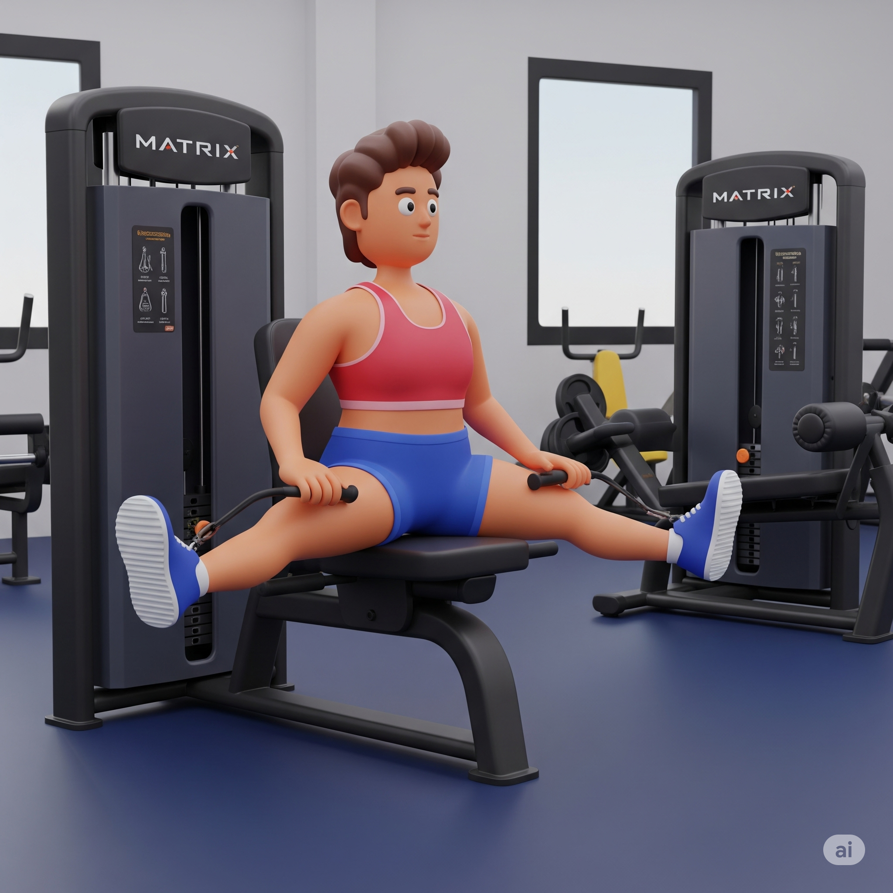Mantén la espalda recta y las caderas fijas. Abre las piernas lo más que puedas, sintiendo la activación en la parte lateral de tus glúteos.
5. Aducción de Cadera Matrix - 3 series de 15-20 repeticiones
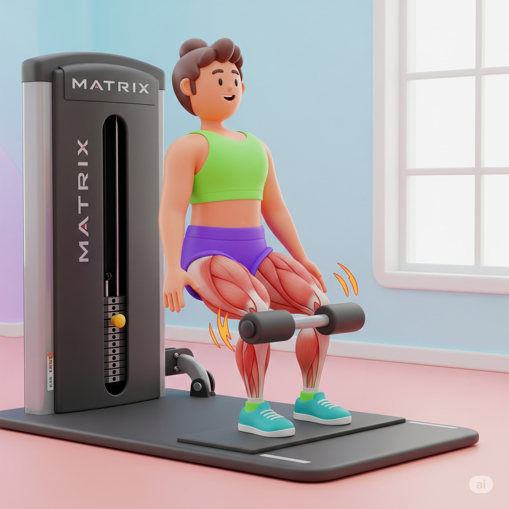Junta las piernas contrayendo la cara interna de los muslos. Realiza el movimiento de forma controlada y concéntrica.
6. Elevación de Pantorrillas Matrix - 3 series de 15-25 repeticiones

Realiza un rango completo de movimiento, estirando completamente las pantorrillas abajo y elevándote lo más alto posible sobre las puntas de los pies.
Enfriamiento (5-10 minutos):
Estiramientos estáticos para cuádriceps, isquiotibiales, glúteos y pantorrillas. Mantén cada estiramiento por 20-30 segundos.
Día 3: Espalda & Bíceps (Énfasis en Fuerza y Amplitud)
Calentamiento (5-10 minutos):
- Remo en Máquina Matrix - 5 minutos a ritmo suave, enfocándose en la retracción escapular.
- Rotaciones de hombros hacia adelante y hacia atrás.
- Estiramientos dinámicos ligeros para espalda.
Rutina Principal:
1. Jalón al Pecho Matrix - 4 series de 8-12 repeticiones
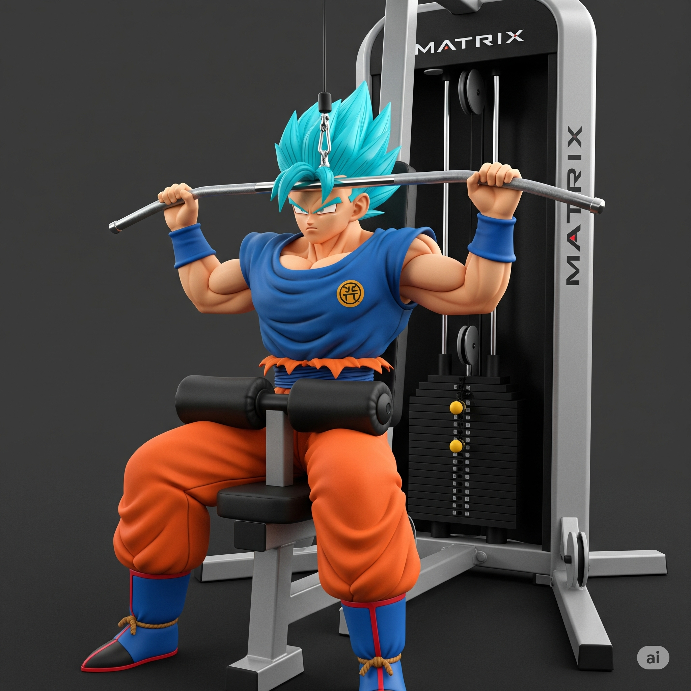Agarre más ancho que los hombros. Tira la barra hacia la parte superior de tu pecho, sintiendo la contracción en los dorsales.
2. Remo Sentado Matrix - 3 series de 10-15 repeticiones

Mantén el pecho erguido y los hombros hacia atrás. Tira el agarre hacia tu abdomen, apretando los omóplatos al final del movimiento.
3. Pullover Matrix - 3 series de 12-15 repeticiones
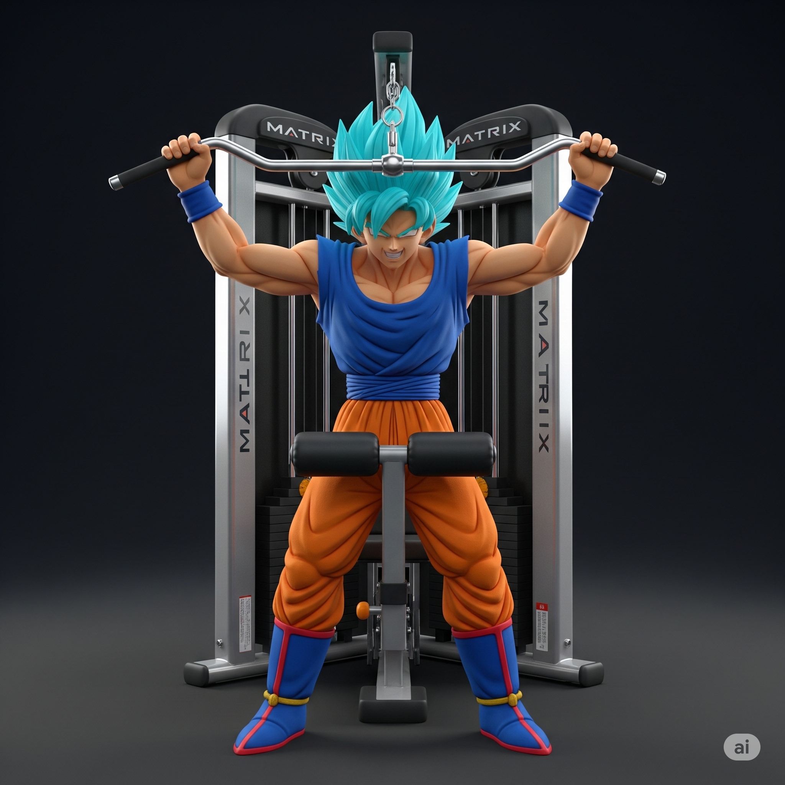Realiza un movimiento amplio y controlado, enfocándote en el estiramiento completo de los dorsales en la parte superior.
4. Curl de Bíceps Matrix - 3 series de 12-15 repeticiones

Mantén los codos fijos. Contrae el bíceps al máximo en la parte superior y baja el peso de forma controlada.
5. Face Pulls con Cable Matrix - 3 series de 15-20 repeticiones
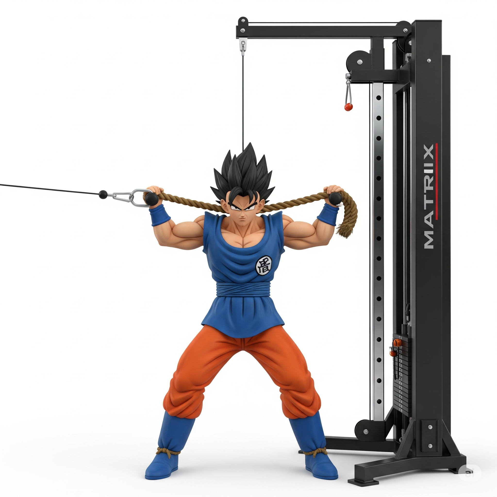Usa una cuerda o agarre doble en la polea alta. Tira el cable hacia tu cara, separando las manos y contrayendo los músculos entre tus omóplatos.
Enfriamiento (5-10 minutos):
Estiramientos estáticos para espalda (dorsales, romboides) y bíceps. Mantén cada estiramiento por 20-30 segundos.
Día 4: Cardio de Quema de Grasa & Core
Cardio Principal (30-40 minutos):
1. Caminadora Matrix - HIIT - 25 minutos
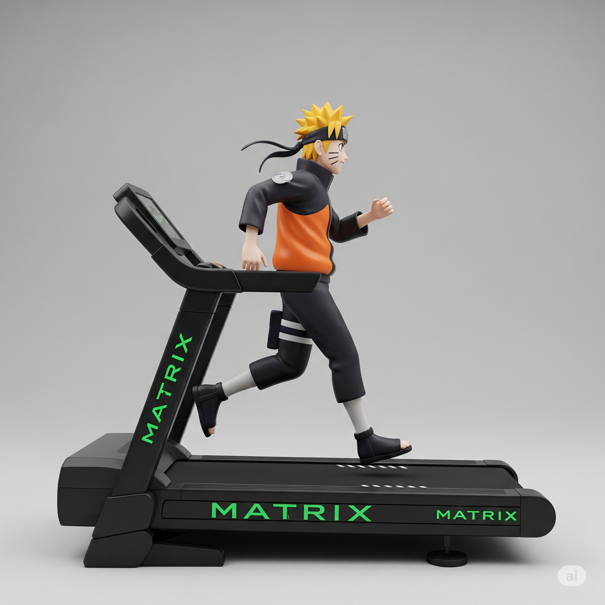**Calentamiento:** 5 min de caminata rápida. **Intervalos (20 min):** 1 min de sprint seguido de 2 min de caminata de recuperación. Repetir 7 veces.
2. Elíptica Matrix - Steady State - 15 minutos
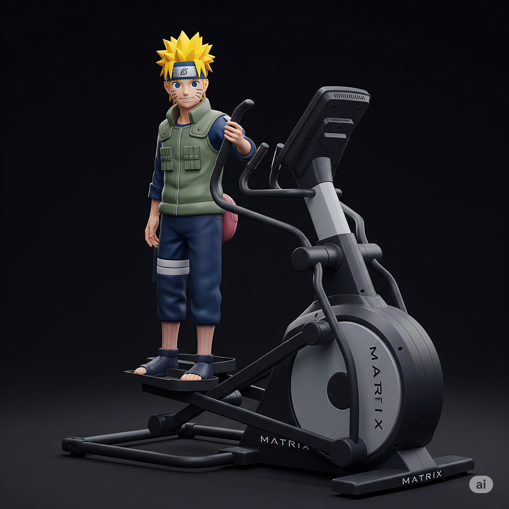Mantén un ritmo constante y una resistencia que te desafíe pero te permita mantener una conversación.
Rutina de Core (15-20 minutos):
3. Crunch Abdominal Matrix - 3 series de 15-20 repeticiones

Realiza la contracción abdominal de forma lenta y controlada, sintiendo el trabajo en tu abdomen.
4. Elevaciones de Rodillas Matrix - 3 series de 12-18 repeticiones
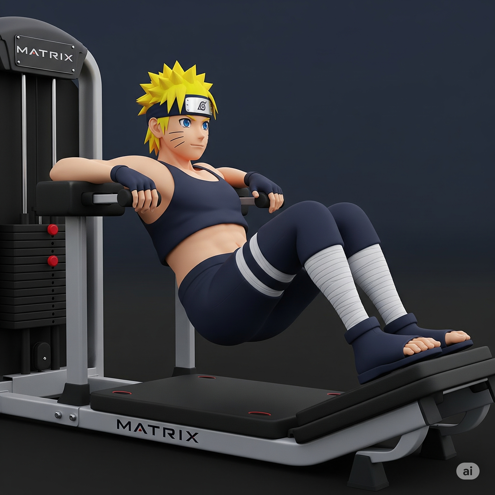Apoya los antebrazos en los soportes y eleva las rodillas hacia tu pecho, contrayendo el abdomen inferior.
5. Plancha en Suelo - 3 series de 45-60 segundos
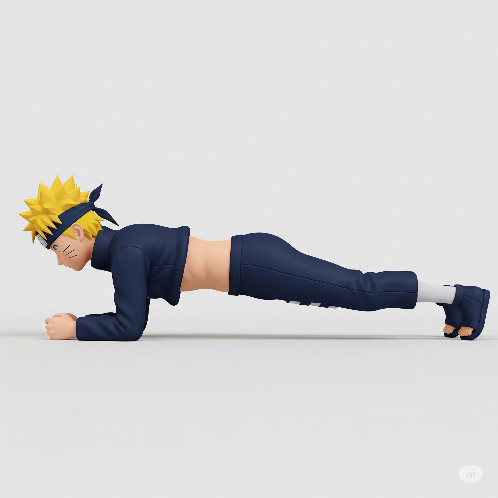Mantén tu cuerpo recto desde la cabeza hasta los talones. Activa fuertemente tu abdomen y glúteos.
Enfriamiento (5-10 minutos):
Estiramientos suaves para todo el cuerpo y técnicas de respiración para ayudar a la recuperación post-cardio.
Día 5: Full Body & HIIT / Recuperación Activa
Este día es flexible. Puedes usarlo para un entrenamiento de cuerpo completo más ligero, HIIT intenso, o recuperación activa.
Circuito Full Body - 3-4 rondas (45 seg trabajo / 15 seg descanso):
Realiza cada ejercicio por 45 segundos con 15 segundos de descanso entre ejercicios. Descansa 2 minutos entre rondas.
Enfriamiento (10 minutos):
Estiramientos completos de todo el cuerpo, enfocándote en las áreas de mayor tensión.
Control de Peso & Progreso
📊 Calculadora de IMC y Composición Corporal
🎯 Índice de Masa Corporal
📏 Peso Ideal Recomendado
55.8 - 75.4 kg
🔥 Estimación de Grasa Corporal
⚡ Metabolismo Basal
Objetivo: Tonificación + Ganancia Muscular + Pérdida de Grasa
Meta semanal de peso: Apunta a una pérdida de 0.5 a 1 kg por semana de forma saludable, mientras te enfocas en mantener o aumentar tu fuerza en las máquinas. Recuerda que ganar músculo puede ralentizar la pérdida de peso en la báscula, pero mejorará tu composición corporal.
| Semana | Peso Objetivo (kg) | Peso Actual (kg) | IMC | Diferencia | % Grasa Est. |
|---|---|---|---|---|---|
| Semana 1 | -0.5 a -1 | -- | -- | -- | |
| Semana 2 | -1 a -2 | -- | -- | -- | |
| Semana 3 | -1.5 a -3 | -- | -- | -- | |
| Semana 4 | -2 a -4 | -- | -- | -- | |
| Semana 5 | -2.5 a -5 | -- | -- | -- | |
| Semana 6 | -3 a -6 | -- | -- | -- | |
| Semana 7 | -3.5 a -7 | -- | -- | -- | |
| Semana 8 | -4 a -8 | -- | -- | -- | |
| Semana 9 | -4.5 a -9 | -- | -- | -- | |
| Semana 10 | -5 a -10 | -- | -- | -- | |
| Semana 11 | -5.5 a -11 | -- | -- | -- | |
| Semana 12 | -6 a -12 | -- | -- | -- |
💡 Consejos para Athletic Gym:
- Las máquinas Matrix suelen tener instrucciones visuales. Obsérvalas para la configuración inicial.
- Ajusta siempre el asiento y los puntos de apoyo de las máquinas para que se adapten a tu cuerpo antes de cada serie.
- En horas pico (generalmente en la tarde, después de las 5 PM), sé flexible y ten 1-2 ejercicios alternativos por si tu máquina preferida está ocupada.
- ¡Usa tu toalla en todas las máquinas y límpialas después de usarlas! Es una norma común del gimnasio.
- Si hay mucha gente en la zona cardio, respeta el límite de tiempo (usualmente 20-30 minutos) para que todos puedan usar las máquinas.
- No dudes en pedir orientación al personal del gimnasio si no estás seguro de cómo usar una máquina o si necesitas un ajuste. ¡Están para ayudarte!